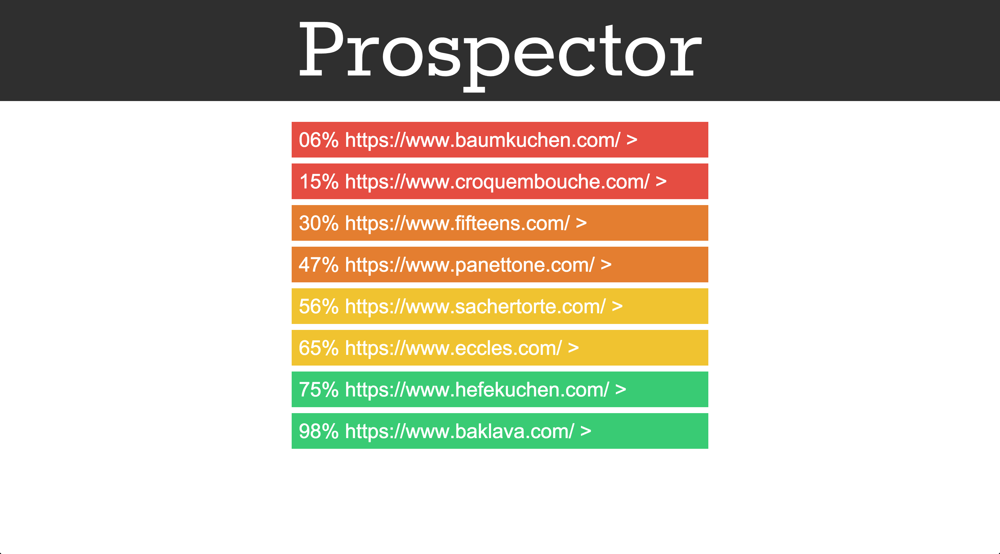
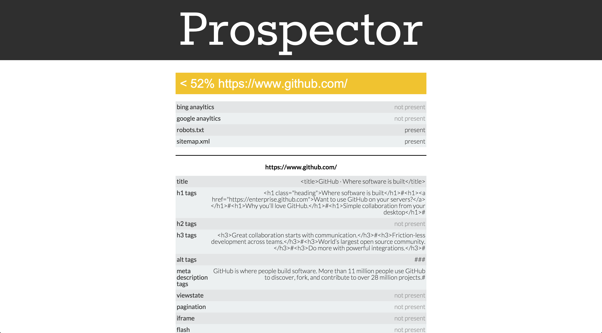

When I initially started learning how to write programs, I focused a lot on the automation of tasks. I enjoyed the feeling of efficiency as I wrote scripts to automate tasks, and challenged myself to automate more and more complex functionality. I saw a great opportunity when I learned that my friends who worked in SEO found clients by pouring over HTML source code and using their expertise to determine whether or not it was worth contacting the owner of the website for additional optimisation of their site.
The Prospector application scrapes a sample of a website (or the entire website if it is small) and analyses the relevant SEO information to give an estimate of how well it has been optimised for search engines. Additionally, it scrapes and displays for the user direct code related to SEO allowing for a more in-depth analysis without needing to humanly parse the source code of the site.
The application was created in Python using the Flask framework, and the Beautiful Soup module was used to handle the scraping. Additional functionality was created from scratch to analyse the data and provide the estimate. While the application served it’s purpose as a research subject for my dissertation and as a proof of concept, more work is required before the application can be considered a full product. Most prominently, work needs to be done on the accuracy of the estimate. As SEO techniques are constantly changing, this will be an ongoing problem throughout the product’s lifecycle, however the possibility of automating updates to the application by scraping popular SEO resources and implementing the changes is an avenue of development I’d love to look into in the future.